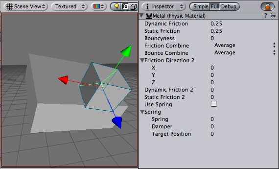

Previous
Previous
The physics material contain all info needed to tune friction and bouncing effects of colliding objects.
To create a physic material select the menu Assets -> Create -> Physic Material. Then drag the physic material from the project pane on a collider in the scene.
|  |
The Physic Material
Properties
| Property: | Function: |
|---|---|
| The friction used when an object is lying on a surface. Usually a value from 0 to 1. | |
| The friction used when already moving. Usually a value from 0 to 1. | |
| How bouncy is the surface? A value of 0 will not bounce. A value of 1 will bounce without any loss of energy. | |
| How the friction of two colliding objects is combined. | |
| The two friction values are averaged. | |
| The smallest of the two values is used. | |
| The largest of the two values is used. | |
| The friction values are multiplied with each other. | |
| How the bouncyness of two colliding objects is combined. | |
| The two values are averaged. | |
| The smallest of the two values is used. | |
| The largest of the two values is used. | |
| The values are multiplied with each other. | |
| The direction of anisotropy. Anisotropic friction is enabled if the vector3 is not zero. Dynamic Friction 2 and Static Friction 2 will be applied along Friction Direction 2. | |
| If anisotropic friction is enabled, dynamicFriction2 will be applied along Friction Direction 2. | |
| If anisotropic friction is enabled, staticFriction2 will be applied along Friction Direction 2. | |
| If anisotropic friction is enabled, staticFriction2 will be applied along Friction Direction 2. | |
| If use Spring is checked, surface will be springy. | |
| The spring of the surface | |
| The spring coefficient. A high value will pull the surfaces towards the rest position faster. | |
| The damper coefficient. A high value will dampen the relative movement of the two surfaces. | |
| The rest position of the spring. |
Details
Friction is the quantity which prevents surfaces from sliding off each other. This value is critical when trying to stack objects. Friction comes in two forms, dynamic and static. Static friction is used when the object is lying still. It will prevent the object from starting to move. If a large enough force is applied to the object it will start moving. At this point dynamic friction will come into play. Dynamic friction will now attempt to slow down the object while in contact with another.
Hints
- Don't try to use a standard physic material for the main character. Make a customized one and get it perfect.